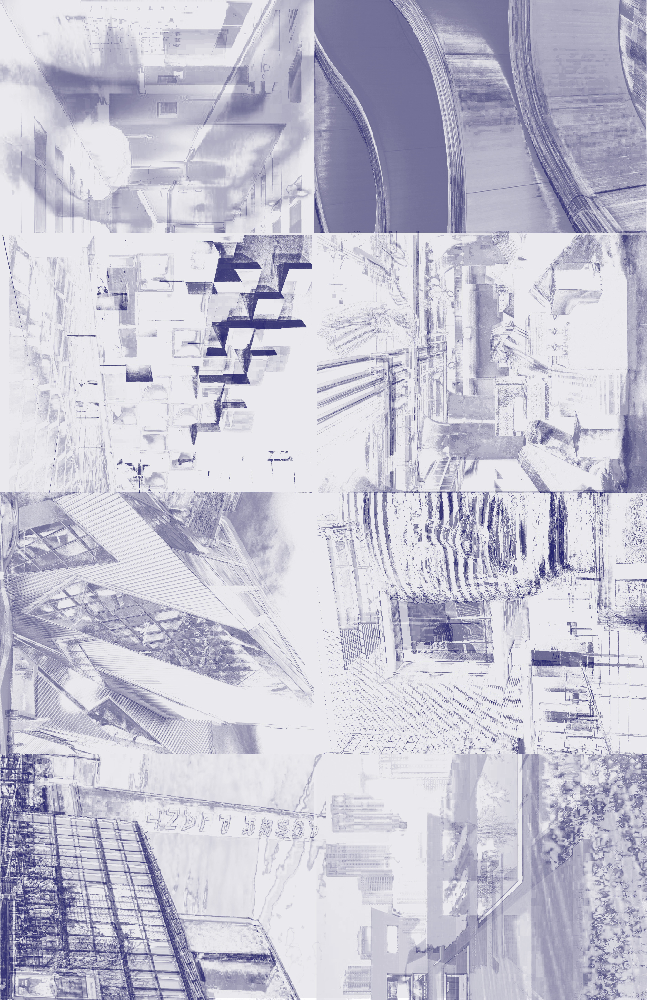

About
Art Tourism Toronto
Art Tourism Toronto is a visual guide to exploring the city through museums, galleries, exhibitions, and cultural spaces. The site combines a map-based way of navigating Toronto’s art scene with exhibition highlights, archived events, and shared visitor tips, making it easier to discover where to go, what is happening, and how different cultural destinations connect across the city.